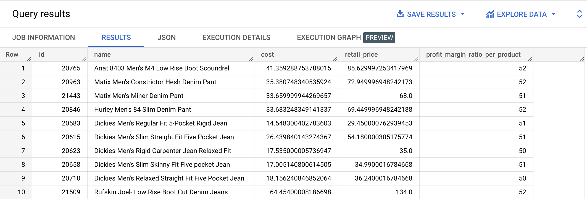
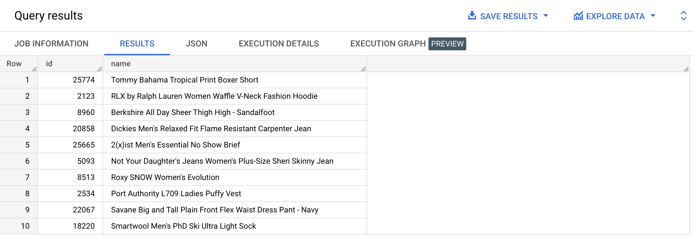

SELECT ROUND(2.4561, 1);
| f0_ |
|---|
| 2.5 |
👉 Check out the official documentation
SELECT TRUNC(2.4561, 1);
| f0_ |
|---|
| 2.4 |
👉 Check out the official documentation
SELECT FLOOR(2.4561);
| f0_ |
|---|
| 2.0 |
👉 Check out the official documentation
SELECT CEIL(2.4561); -- or SELECT CEILING(2.4561)
| f0_ |
|---|
| 3.0 |
👉 Check out the official documentation
SELECT SAFE_DIVIDE(2.4561, 0);
| f0_ |
|---|
| null |
👉 Check out the official documentation
SELECT RAND();
| f0_ |
|---|
| 0.44105372482388427 |
👉 Check out the official documentation
SELECT ABS(-2.4561);
| f0_ |
|---|
| 2.4561 |
👉 Check out the official documentation
{% include practice_problems_intructions.html %}bigquery-public-data.thelook_ecommerce.products

SELECT id,
name,
cost,
retail_price,
CAST(((retail_price - cost) / retail_price) * 100 AS integer) AS profit_margin_ratio_per_product
FROM bigquery-public-data.thelook_ecommerce.products
WHERE CAST(((retail_price - cost) / retail_price) * 100 AS integer) >= 50
LIMIT 10;
bigquery-public-data.thelook_ecommerce.products
Write a query that will display 10 products randomly each time it’s run.

SELECT id, name
FROM bigquery-public-data.thelook_ecommerce.products
ORDER BY RAND()
LIMIT 10;